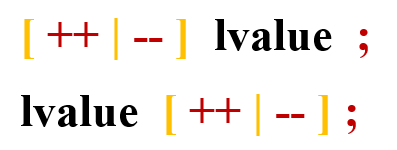

Assignment Instructions
Basic assignment
A basic assignment instruction is the following (see BNF syntax) :

A "rvalue" expression is evaluated and assigned to the variable resulting of the evaluation of a "lvalue".
The "lvalue" variable which will be modified can be :
- the result of an expression (for example, an access to an element in a collection)
- a direct reference to a simple variable (it cannot be a "const" variable i.e. a constant)
The "rvalue" can be :
- a "raw" value (for instance an integer value ...)
- a direct reference to an existing simple variable
- the result of an expression (for example, the addition of two integer variables ...)
Macro assignment
An expression "rvalue" is assigned to a "macro" without being evaluated :
Increment and Decrement operations
On numeric values :
